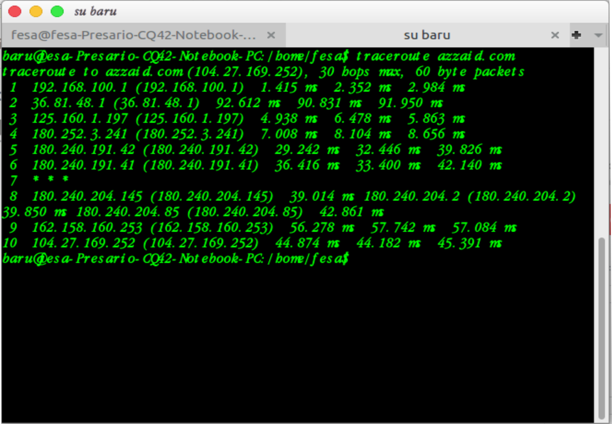

Pengertian Traceroute(Tracert) :
Traceroute (Tracert) adalah perintah untuk menunjukkan rute yang dilewati paket untuk mencapai tujuan. Ini dilakukan dengan mengirim pesan Internet Control Message Protocol (ICMP) Echo Request Ke tujuan dengan nilai Time to Live yang semakin meningkat. Rute yang ditampilkan adalah daftar interface router (yang paling dekat dengan host) yang terdapat pada jalur antara host dan tujuan.
Fungsi Traceroute(Tracert) :
Untuk menunjukkan rute yang dilewati sebuah paket untuk mencapai tujuannya dengan mengirimkan pesan Internet Control Message Protocol (ICMP) Echo Request ke tujuan berdasarkan alamat IP tujuan dengan nilai Time to Live yang semakin meningkat. Traceroute akan me-list daftar router yang dilalui dan menampilkan informasi IP Address router. Informasi yang diperoleh adalah banyak nya hop (lompatan) yang diperlukan untuk mencapai tujuan dan lama waktu yang dibutuhkan. Traceroute memanfaatkan flag TTL. Contoh penggunaan tracert,tracert https://azzaid.commaka akan terlihat beberapa lompatan router mana saja yang dilewati dari komputer pengguna menuju ke https://azzaid.com.
Cara kerja Traceroute yaitu mengirimkan paket ke host tujuan dengan TTL yang bertambah dengan satu (dimulai dengan 1). Jika host mengirim balik ICMP TIME_EXCEED traceroute akan memberitahukan ke user alamat dari pengirim ICMP tersebut dan jeda waktu dari saat pengiriman IP/UDP paket sampai diterimanya paket ICMP TIME_EXCEED. Setelah ini traceroute akan mengirimkan lagi ke host tujuan dengan TTL += 1 (TTL sekarang lebih besar 1 dari sebelumnya). Traceroute akan terus melakukan hal seperti diatas sampai diterima ICMP PORT_UNREACHABLE dari host tujuan atau maksimum hop (lompatan) telah tercapai (default 30). Traceroute menggunakan protokol UDP untuk mengetahui bagaimana traceroute telah sampai ke host tujuan dan tidak lagi mengirimkan paket.
pengertian Ping :
Ping adalah salah satu program utilitas yang terdapat pada sebuah komputer yang dapat digunakan untuk melakukan pengecekkan status komputer host tertentu yang berada pada jaringan yang berbasis teknologi internet atau TCP/IP. Dengan menggunakan program ping maka kita dapat mengetahui apakah komputer yang kita gunakan terhubung dengan komputer lainnya atau dengan komputer yang akan kita akses. Status terhubung atau tidaknya suatu komputer diketahui setelah si pengguna menjalankan program ping yaitu dengan mengirimkan sebuah paket ke komputer tujuan yang berupa IP Address atau hostname, apabila komputer yang dituju tersebut dapat memberikan balasan paket maka dapat dipastikan bahwa komputer tersebut terhubung dengan komputer yang kita gunakan.
Fungsi Ping :
untuk mengecek konektivitas antar satu komputer dengan komputer lainnya dengan mengirim sebuah pesan Internet Control Message Protocol (ICMP) echo reply kepada IP Address yang ingin diujicoba konektivitasnya dan menunggu respon darinya.